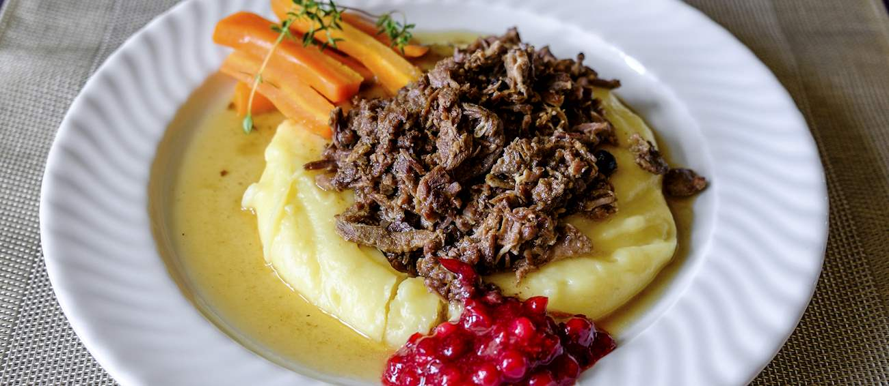

Poronkäristys
Poronkäristys is the national dish of Finland, prepared by sautéing reindeer meat.
Ingredients
- 750 reindeer meat
- 100 gram bacon
- 1 large onion
- 1 heaping tbsp butter
- half can of lager beer
- 175ml beef stock
- 2 bay leaves
- ground black pepper
- quarter tbsp freshly ground juniper
- salt
- robuchon-style mashed potatoes
- 2 pounds yukon gold potatoes
- 20tablespoon unsalted butter
- 1 1/3 cup whole milk
- salt and white pepper
- lingonberry jam
- Heat the butter in a big pot. When melted, add the onion, finely chopped, and let it cook for a couple of minutes.
- On the other burner in a separate pan, cut the bacon into little pieces and fry it in a pan in its own fat. Add the bacon (and the fat) and the reindeer meat to the pot and sauté all together. Season with salt and pepper.
- Add the bay leaves and pour the beer and the stock into the pot. Let it cook covered at low heat for 1 hour and half.
- Place potatoes in fine-mesh strainer and rinse under cold running water until water runs clear. Set aside to drain.
- Heat butter, milk, and 1 teaspoon salt in large saucepan over low heat until butter has melted. Add potatoes, increase heat to medium-low, and cook until liquid just starts to boil. Reduce heat to low, partially cover, and gently simmer until paring knife can be slipped into and out of centers of potatoes with no resistance, 30 to 40 minutes, stirring every 10 minutes.
- Drain potatoes in fine-mesh strainer set over large bowl, reserving cooking liquid. Wipe out saucepan. Return cooking liquid to saucepan and place saucepan over low heat.
- Set food mill fitted with finest disk over saucepan. Working in batches, transfer potatoes to hopper and process. Using whisk, recombine potatoes and cooking liquid until smooth, 10 to 15 seconds (potatoes should almost be pourable). Season with salt and pepper to taste, and serve immediately.
- Serve the Sautéed Reindeer hot together with the mashed potatoes, lingonberry jam or cranberry sauce, pickled beetroots, and pickled cucumbers.